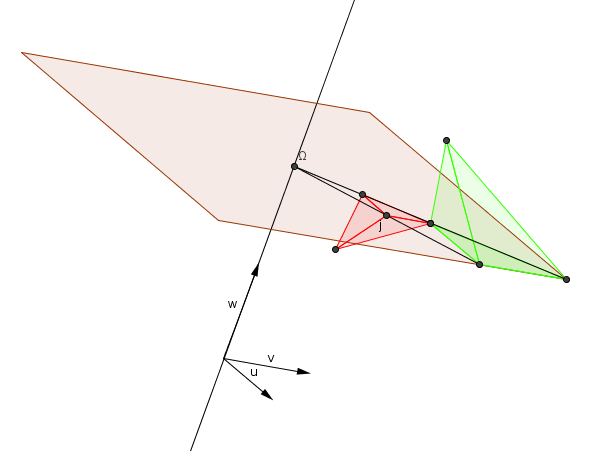

| Choisissez votre langue ! | Choose your language ! |
Les similitudes de l'espace relèvent de la définition générale des similitudes d'un espace euclidien qui sont décrites dans .
Parmi ces similitudes on trouve évidemment les . Le théorème essentiel dit que :
Parmi ces similitudes on trouve évidemment les . Le théorème essentiel dit que :
The similarities of space fall under the general definition of similarities of a Euclidean space which are described in .
Among these similarities we obviously find the . The essential theorem says that:
Among these similarities we obviously find the . The essential theorem says that:
théorème 1
Toute similitude de l'espace de rapport k≠1 possède un unique point fixe Ω.
theorem 1
Every similarity of the space with ratio k≠1 has a unique fixed point Ω.
La démonstration est rigoureusement la même que dans le cas du plan ( ). On remarquera que la dimension n'est pas utilisée.
Soit donc s une similitude de rapport k≠1 et Ω son point fixe. Soit h l'homothétie de centre Ω et de rapport k.
Alors soh-1 est une isométrie de l'espace admettant Ω pour point fixe.
Il suffit donc pour caractériser les similitudes de l'espace de reprendre le et de ne conserver que celles qui possèdent au moins un point fixe.
Nous avons alors le résultat suivant :
Soit donc s une similitude de rapport k≠1 et Ω son point fixe. Soit h l'homothétie de centre Ω et de rapport k.
Alors soh-1 est une isométrie de l'espace admettant Ω pour point fixe.
Il suffit donc pour caractériser les similitudes de l'espace de reprendre le et de ne conserver que celles qui possèdent au moins un point fixe.
Nous avons alors le résultat suivant :
The demonstration is strictly the same as in the case of the plan ( ). Note that the dimension is not used.
Let s therefore be a similarity with ratio k≠1 and Ω its fixed point. Let h be the dilation with center Ω and ratio k.
Then soh-1 is an isometry of the space having Ω as a fixed point.
It is therefore sufficient to characterize the similarities of space to use the and to keep only those which have at least one fixed point.
We then have the following result:
Let s therefore be a similarity with ratio k≠1 and Ω its fixed point. Let h be the dilation with center Ω and ratio k.
Then soh-1 is an isometry of the space having Ω as a fixed point.
It is therefore sufficient to characterize the similarities of space to use the and to keep only those which have at least one fixed point.
We then have the following result:
théorème 2
Une similitude de l'espace, de rapport k≠1 est le produit commutatif d'une homothétie de rapport k et de centre Ω par une isométrie de l'espace qui est : - soit l'identité
- soit une rotation autour d'un axe contenant Ω
- Soit une réflexion relativement à un plan contenant Ω
- Soit une réflexion relativement à un plan composée avec une rotation d'axe contenant Ω.
theorem 2
A similarity of space, with ratio k≠1 is the commutative product of a dilation with ratio k and center Ω by an isometry of space which is: - either the identity
- or a rotation around an axis containing Ω
- or a reflection relative to a plane containing Ω
- or the composite of a plane reflection with a rotation around an axis containing Ω
Une similitude négative de rapport 1/2 transforme le tétraèdre vert en le tétraèdre rouge.
A negative similarity of ratio 1/2 transforms the green tetrahedron into the red tetrahedron.

Image générée avec GeoGebra2D
Image generated with GeoGebra2D
|
Création Gilles Dubois
Created by Gilles Dubois
|
Janvier 2022
January 2022
|
Version mobile Jquery
Mobile Jquery version
|
|